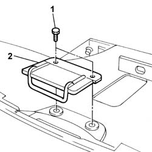

7040A33 flap striker - adjust
- Path
- Procedures > 70 FITTINGS > 7040 BODYSHELL INTERIOR TRIMS AND FITTINGS > 7040A passenger compartment trim > 7040A33 flap striker - adjust
- Kind
- repair procedure (removal / refitting; the operation number is the code)
- Applies to
- all engines; all production periods
- Interactive page
- https://sloeber94.github.io/elrnDB-fPnd/en/#/2753187
Applies to: all engines; all production periods
Applies to: all engines; all production periods
 Removing
Removing
 Refitting
RefittingRemove the compartment as described in the procedure:
5580C26 LOCK BARREL KEY/SWITCH for deactivating passenger 'AIR BAG - R.R.
1. Undo the retaining bolts.
2. Remove the lock striker.

Applies to: all engines; all production periods
Refitting
RemovingPosition the lock striker and tighten the fixing bolts.
Fit the compartment as described in the procedure:
5580C26 LOCK BARREL KEY/SWITCH for deactivating passenger 'AIR BAG - R.R.
Connect the battery terminals.
Check the operation of the Air Bag system using the Examiner or other diagnostic equipment.